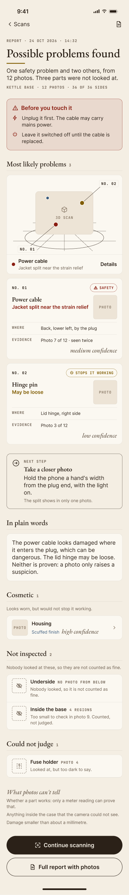
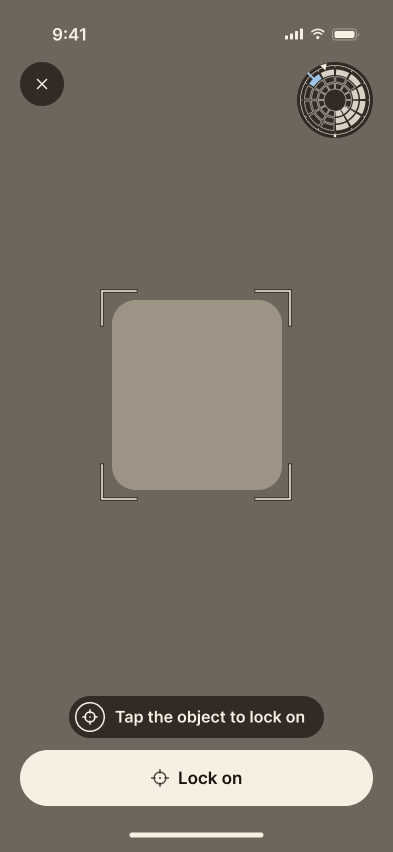
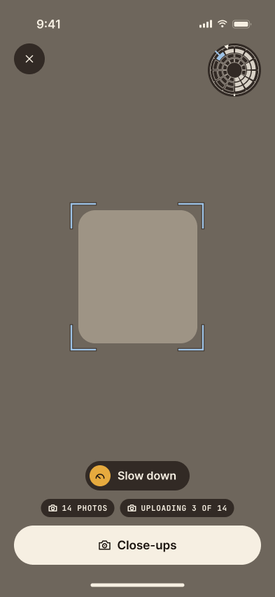
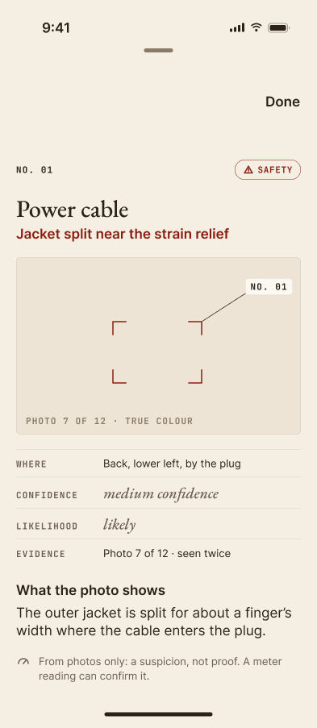

No. 01
Safety
Power cable
Jacket split near the strain relief
- Where
- Back, lower left, by the plug
- Evidence
- Photo 7 of 12, seen twice
medium confidence
Hardware inspection · iPhone with LiDAR
Scan the device, take the close-ups LEA asks for, and read what it found: each problem with the photo it came from, where it is, and how sure LEA is, in words. What nobody looked at is listed as not inspected. It is never counted as fine.


No. 01
Walk around the object. The dial fills in as each side is seen, and short cues tell you when you are moving too fast, standing too close or working in poor light.

No. 02
LEA asks for full-resolution photos of each side at the camera’s sharpest distance, and drops any that come out blurred. The close-ups are the evidence the report points back to.

No. 03
A verdict first, then each problem, ranked, with its photo and its place on the 3D scan. Anything LEA could not settle is set apart, with the reason.
The report is set like a museum label. What the camera saw is printed upright. How sure LEA is goes in the margin, in a word, never a percentage.
Jacket split near the strain relief
medium confidence
No photo from below
Nobody looked, so it is not counted as fine.
Safety problems are the only red on the page, so a warning never has to compete with a button.
Parts nobody photographed, and parts the photos could not settle, get a dashed outline. A guess never looks like a finding.
Scorch marks and corrosion are evidence, so crops and scans are never tinted or filtered.
A photo can only raise a suspicion. Add a multimeter reading and an electrical suspicion becomes a proven fault.
If you open things up for a living, or for fun, tell us what you fix.